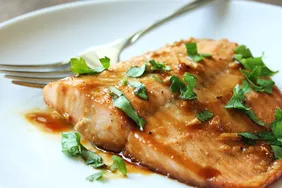

Maple Salmon

Description
This maple glazed salmon is delicious and very easy to prepare. I love maple syrup in everything and decided to use it in the marinade. My husband totally loved it; he wasn't a salmon fan until now.
Ingredients
- Maple syrup
- Soy sauce
- Garlic
- Seasonings
- Salmon
Steps
- Make the marinade and cut the salmon into fillets.
- Marinate in the fridge for at least 30 minutes.
- Bake in the preheated oven until the fish flakes easily.